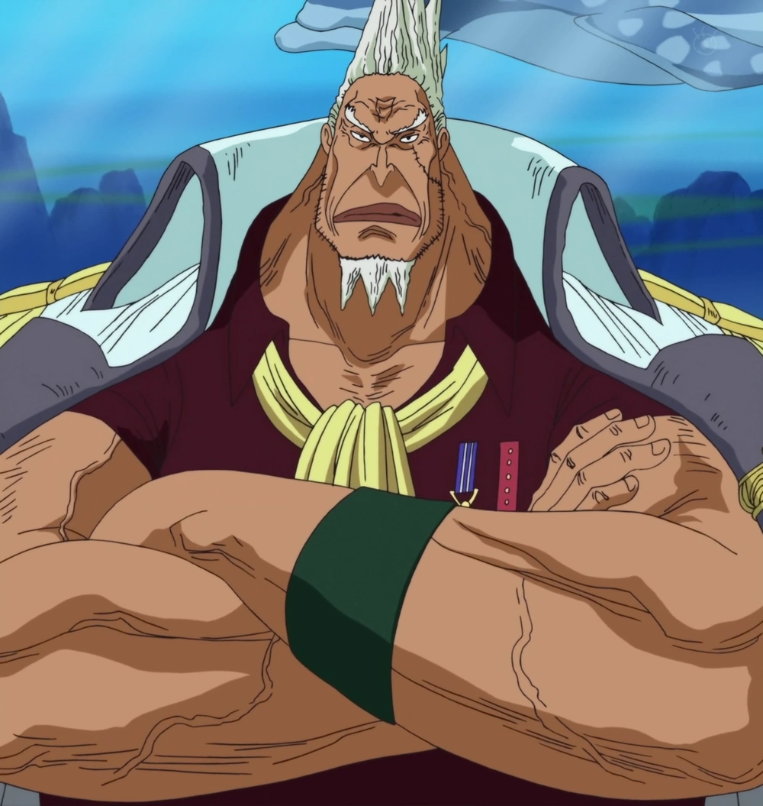

Angkatan Laut (海軍 Kaigun?), adalah kekuatan militer utama Pemerintah
Dunia yang bertugas menjaga keamanan lautan terutama dari gangguan
bajak laut. Mereka hadir di seluruh belahan dunia dengan markas-markas
cabang, namun lebih memusatkan kekuatannya di Grand Line. Bersama
Shichibukai dan Yonko, ketiganya berperan menjaga keseimbangan "Tiga
Kekuatan Besar". Angkatan Laut awalnya bermarkas di Marineford di
Grand Line. Setelah Akainu menjadi laksamana armada yang baru
menggantikan Sengoku, markas Angkatan Laut direlokasi di Dunia Baru.


monkey d garp
Kakek Luffy ini dijuluki sebagai Marinir terkuat di Angkatan Laut.
Meski pangkatnya hanya Wakil Laksamana, tidak ada orang yang berani
mengusiknya. Garp pernah ditawari posisi sebagai Laksamana Armada,
tapi dia menolaknya. Garp bukan pengguna Buah Iblis. Tapi, dia punya
Haki yang cukup membuatnya ditakuti. Garp disebut punya kekuatan
yang sama seperti Gol D Roger, yang juga bukan pengguna Buah Iblis.
Meski mereka berada di dua kubu yang berseberangan, mereka
sebenarnya adalah sahabat. Garp pernah meminta bantuan Roger untuk
melawan Perompak Rocks dan kemudian merawat anaknya, Portgas D Ace,
setelah perompak itu tewas.

Sengoku
Sengoku adalah pensiunan Laksamana yang masih disegani di kalangan
Angkatan Laut. Dia seorang yang bijaksana, menjunjung keadilan dan
kurang menyukai peperangan. Dia sempat menjadi angkatan laut terkuat
di masanya bersama dengan Garp. Kekuatan Sengoku tidak terlalu
terekspos di One Piece. Dia terlihat memamerkan kekuatannya saat
melawan Whitebeard di Marineford. Buah Iblis tipe Zoan yang
dimakannya, Hito Hito no Mi, Model: Daibutsu bisa mengubahnya
menjadi patung Buddha raksasa.

Akainu
Akainu adalah musuh bebuyutan Luffy. Karakter ini menjadi incaran
Luffy setelah membunuh kakaknya, Portgas D Ace, di Marineford.
Namun, berkat peristiwa itu, Akainu langsung naik pangkat menjadi
Laksamana Armada. Selain membunuh Ace, Akainu juga membuat
Whitebeard luka parah. Di Marinir, Akainu menggantikan posisi
Sengoku yang pensiun. Untuk menggantikan Sengoku, Akainu harus
menyingkirkan Aokiji. Akainu mendapatkan kekuatan lewat Buah Iblis
Magu Magu no Mi. Buah Iblis tipe Logia itu membuatnya bisa
memanipulasi magma. Dia telah menuju tahap awakening yang membuatnya
jadi lebih berbahaya.

kong
Saat ini, Kong adalah Panglima Tertinggi Pemerintahan Dunia.
Sebelumnya, dia menjabat sebagai Laksamana Armada. Dia kemudian
digantikan Sengoku pascaeksekusi Gol D Roger. Kong adalah salah satu
karakter paling misterius di serial ini. Kekuatan dan kepribadian
Kong belum diungkapkan. Namun, dengan jabatannya sebagai Panglima
Tertinggi sudah menjadi bukti kalau dia bukanlah karakter yang bisa
disepelekan. Dengan One Piece memasuki Final Saga, sosoknya mungkin
akan lebih terekspos nanti.

kizaru
Kizaru pernah menjadi satu tim dengan Akainu dan Aokiji sebagai
Laksamana. Dia merupakan satu-satunya Laksmana yang tersisa setelah
lompatan waktu. Kizaru diperkenalkan di busur cerita Pulau Sabaody
dan bentrok dengan Perompak Topi Jerami setelah Luffy memukul salah
satu Tenryuubito. Perompak Topi Jerami nyaris punah jika Rayleigh
tidak muncul. Ini karena Kizaru adalah pengguna Buah Iblis tipe
Logia, Pika Pika no Mi. Buah itu memberinya kekuatan memanipulasi
cahaya seperti membentuk pedang atau sinar laser. Dia juga punya
kecepatan secepat cahaya

Fujitora
Fujitora juga merupakan Laksamana baru setelah lompatan waktu,
seperti Ryokugyu. Mereka mengisi posisi Laksamana yang kosong
setelah Akainu naik pangkat dan Aokiji yang memilih meninggalkan
Marinir dan bergabung dengan Perompak Blackbeard. Fujitora kali
pertama tampil di busur cerita Dressrosa. Fujitora ditugaskan untuk
memburu Luffy dan Law. Dia sempat duel dengan Topi Jerami, Law, dan
Sabo. Fujitora merupakan pemakan Zushi Zushi no Mi. Buah Iblis tipe
Paramecia itu memberinya kekuatan untuk memanipulasi gravitasi. Dia
bahkan bisa menarik meteor ke bumi

Ryokugyu
Ryokugyu muncul setelah lompatan waktu. Meski masih sangat
misterius, kekuatan Ryokugy tentu tidak dapat disepelekan karena
mampu mencapai jabatan sebagai Laksamana. Siapa Ryokugyu sepertinya
akan terjawab setelah Banteng Hijau itu tiba di Wano pascatumbangnya
Kaido. Ryokugyu adalah pemakan Buah Iblis tipe Logia. Belum
diketahui apa nama buah tersebut. Dari panel di manga, buah itu
membuat Ryokugyu bisa menumbuhkan sulur tanaman dari jarinya dan
juga bunga besar dari punggungnya yang bisa berfungsi sebagai
baling-baling helikopter yang menerbangkannya.
arigatō gozaimashita!!!